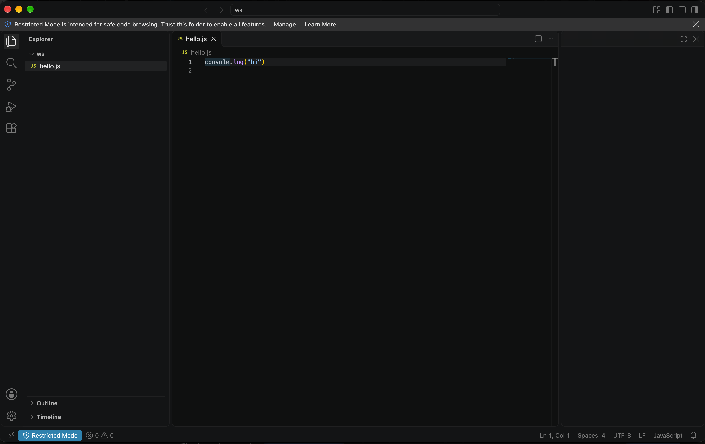
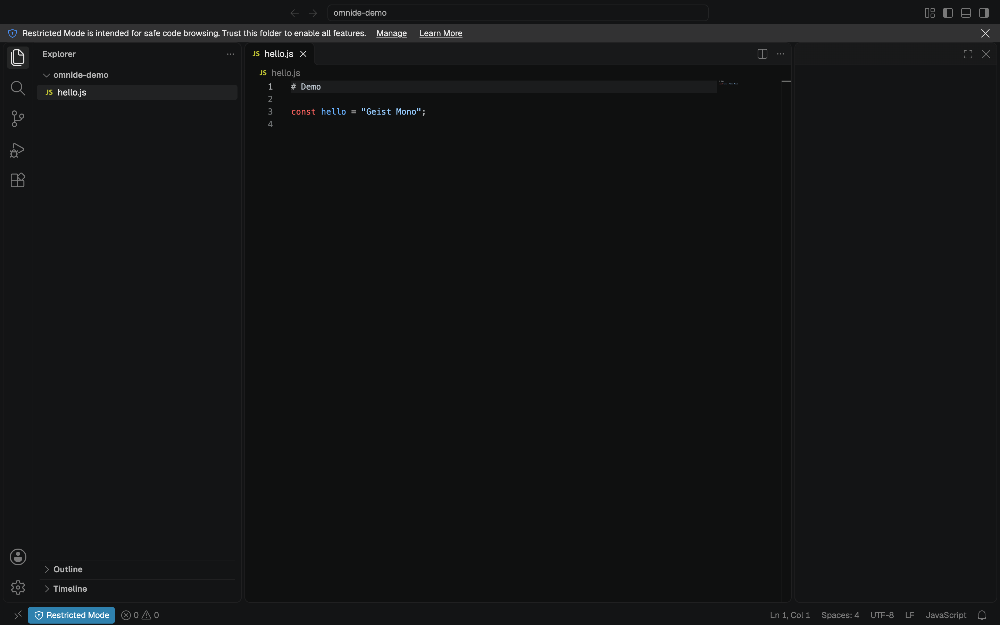
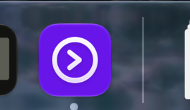

What the first built OmnIDE (macOS arm64, Code OSS 1.148.0) showed in a real run, from the evidence section of PR #17. Files are in docs/evidence of the repo.
| Check | Result |
|---|---|
| Built CLI | ls OmnIDE.app/Contents/Resources/app/bin shows only omnide. bin/omnide --version prints 1.148.0 / 661626d0e72f97806550790a98fb87116c9db825 / arm64. |
| Info.plist | CFBundleName OmnIDE, CFBundleDisplayName OmnIDE, CFBundleIdentifier dev.omnide.app, CFBundleIconFile OmnIDE.icns (the purple ring and caret icon, see the dock shot). |
| Built product.json | applicationName omnide, nameLong OmnIDE, configurationDefaults {"workbench.colorTheme":"OmnIDE Dark"}. |
| First run | A fresh user-data-dir opens with the OmnIDE Dark theme. |
| macOS window title | macOS omits the app name from window titles (title "hello.js — ws"). The name shows in the menu bar and in the process name OmnIDE (dev.omnide.app, System Events). |
| Not verified | Windows and Linux first runs: those builds run only in CI. m1-menubar.png is in docs/evidence but is not shown here (it is a near-blank strip). |



Source: https://github.com/MehdiMamas/omnide/pull/17 (Evidence); docs/evidence/m1-window.png, m1-geist.png, m1-dock.png at e9d901b. Related: First-run network capture.